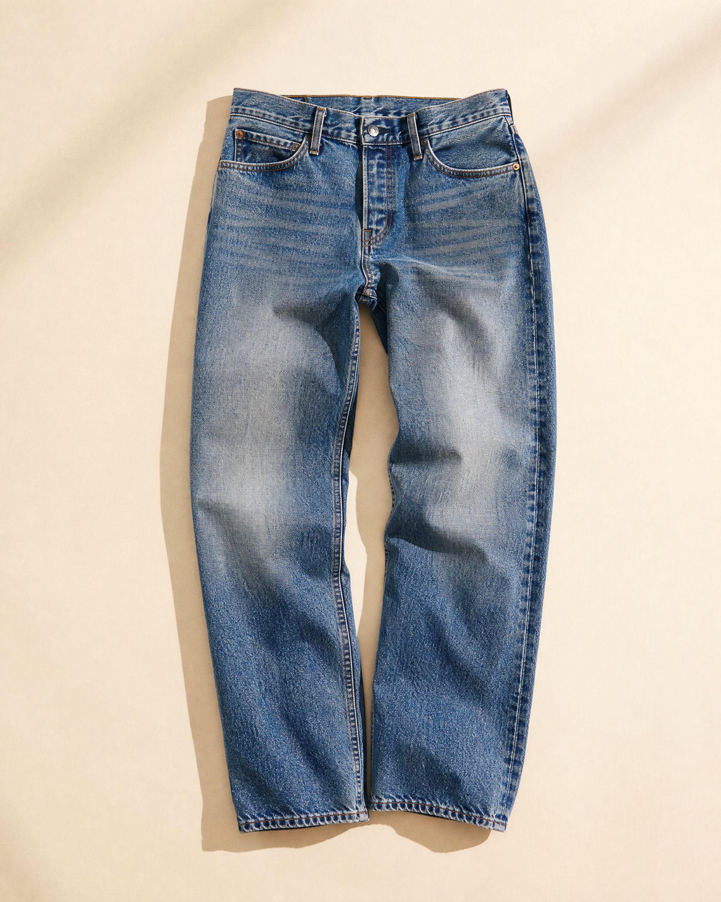
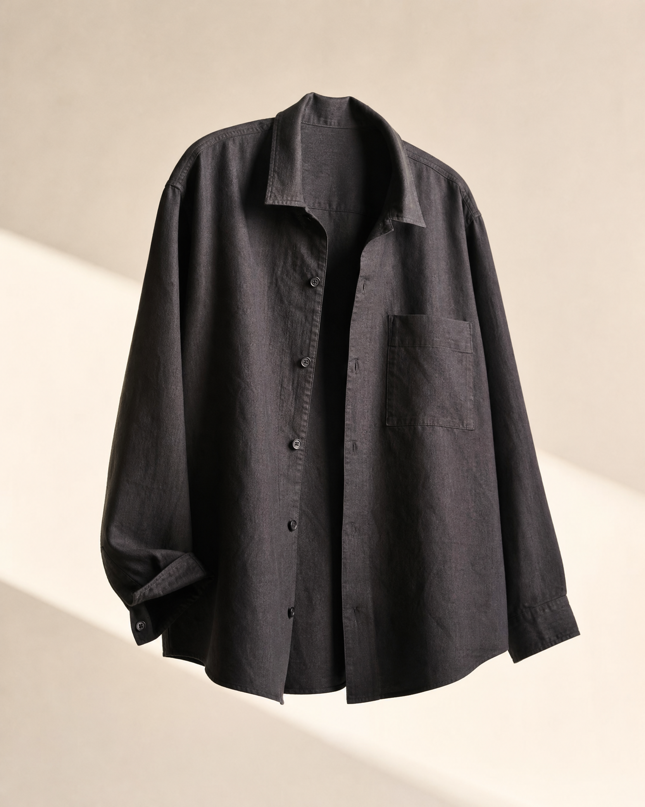
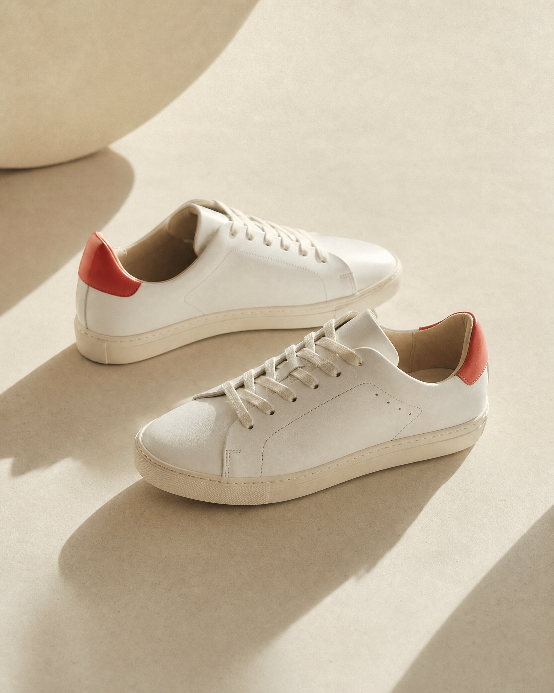

MATERIALS · 06.24.26
The honest beauty of worn-in denim
Why the best pairs get better with every ordinary day.
FROM THE STUDIO
Material stories, places worth remembering, and the people shaping the ClothUs point of view.

MATERIALS · 06.24.26
Why the best pairs get better with every ordinary day.

OBJECTS · 05.18.26
One layer, many lives. We look at the piece that does the most.

PLACES · 04.03.26
A short walk through our favorite block in downtown New York.